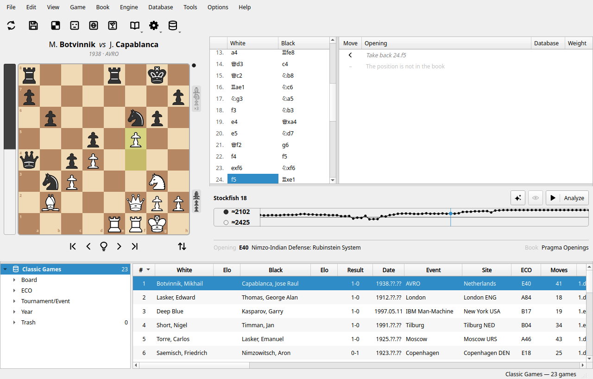

Вышел Pragma Chess 0.4.0 для Windows, macOS и Linux, а также тестовое приложение для Android. Это месяц работы и более трёхсот изменений с версии 0.3.0; вот те, что вы заметите первыми. Полный список — в примечаниях к выпуску (на английском).
База из 1,26 миллиона партий теперь открывается за 3,5 секунды вместо 34 и занимает 0,6 ГБ памяти вместо 6,8. Поиск по позиции (Доска ▸ Позиция) готов сразу для базы, которую уже открывали, и строится на всех ядрах компьютера. Чтобы создать такую базу, есть первый инструмент нового меню «Инструменты»: Преобразовать ▸ PGN в базу Pragma — файл PGN любого размера читается по частям, пока вы продолжаете работать. А Инструменты ▸ Управление расширениями устанавливает большие базы из каталога En Croissant — Lumbra's GigaBase, Caissabase, MillionBase, — преобразуя их на вашем компьютере, и движки вроде Stockfish, RubiChess или Dragon со страниц их авторов. Перед каждой загрузкой программа говорит, откуда файл и на каких условиях.
Кроме lichess.org, Pragma Chess теперь играет на freechess.org, Free Internet Chess Server, под вашей учётной записью или гостем. Во время игры в панели движка стоят два больших цифровых часа, под ними — «Предложить ничью» и «Сдаться»; движок, «Объяснить» и дебютная книга выключены. Когда партия закончена, Pragma Chess оценивает её ход за ходом: рядом с оценкой появляется ход партии, а в окошке — сила, которую показала каждая сторона, примерное Эло белых и чёрных. Это грубая оценка по одной партии, но она откалибрована на партиях более чем четырнадцати тысяч игроков lichess с рейтингом.
Удерживайте глаз рядом с кнопкой «Стоп», и доска покажет позицию в конце линии движка, следуя за ней по мере углубления. Фиолетовые стрелки рисуют планы, заключённые в линии: маршрут коня, подъём ладьи, марш короля в эндшпиле, прорыв пешки. А «Объяснить» разыгрывает мат на доске только тогда, когда вы можете им воспользоваться; долгий спокойный мат, как ферзём против короля, — это техника, и «Объяснить» рисует план и клетку, в которой заперт проигрывающий король.
Окно приветствия открывает ваши проекты и базы одним щелчком. С программой приходят два новых проекта на английском и итальянском: Pawn Endgames (пешечные окончания) и Fischer – Spassky 1972, шестая партия матча в Рейкьявике с комментариями. Этюды (studies) lichess.org подключаются как источник, каждая глава — партия; базы ChessBase 17 читаются с вариантами и примечаниями; комментарии, контроль времени и все теги PGN сохраняются. Появился новый стиль доски, Classic Book, как диаграмма в печатной шахматной книге, и звук фигуры, поставленной на доску.
Pragma Chess говорит также по-испански, по-русски и по-китайски (упрощённое письмо) — благодаря людям, которых мы благодарили несколько недель назад. У каждого движка есть вычислительная мощность, по умолчанию «Средне», чтобы вентиляторы не шумели во время анализа. Для Linux есть AppImage — один файл, который работает в большинстве дистрибутивов, а программа теперь ненавязчиво сообщает о выходе новой версии.
Скачайте его на главной странице. Базу, открытую версией 0.4.0, уже нельзя открыть в 0.3.0: обновите и приложение Android. Если что-то ломается или чего-то не хватает, пишите в Обсуждениях или откройте задачу: первые найденные проблемы скоро будут исправлены в версии 0.4.1.